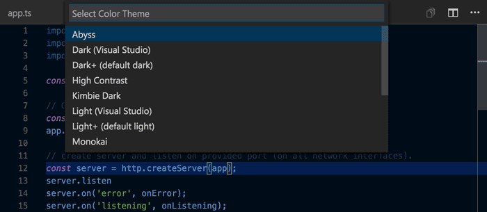
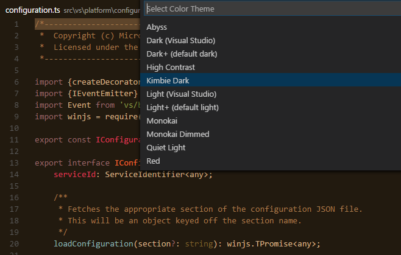

配色テーマを使用することで好みや作業環境に合わせた、VS Codeの背景、テキスト、言語構文の色に変更できます。VS Codeは大きく分けてlight, dark, high contrastテーマをサポートしています。

配色テーマを選択
現在の配色テーマは、設定で構成します。
|
ただし、直接編集する必要はありません。配色テーマ選択を使用して、テーマをプレビューしながら選択する方が簡単です。
- ファイル(Code>)>基本設定>配色テーマでテーマ選択を開きます。
- カーソルキーを使用して配色テーマをプレビューします。
- 配色テーマを選択して、Enterで確定します。

Tip: 既定ではユーザー設定に設定するので、すべてのワークスペースで適用します。しかし、ワークスペース特定の配色テーマを選択することも可能です。これには、ワークスペース設定で配色テーマを構成してください。
Marketplaceから配色テーマを入手
VS Codeで初めからいくつかの配色テーマを用意しています。
その他多くのテーマは、コミュニティーによってVS Code Marketplaceにアップロードされています。使いたいものを見つけたら、インストールして再起動すれば新しいテーマが利用可能になります。
Tip: テーマを検索するには、Extension ビュー(⇧⌘X (Windows, Linux Ctrl+Shift+X))で
themeを検索します。
既存のTextMateテーマを使用する
既存のTextMateカラーテーマ (.tmTheme) をVS Codeに追加できます。たとえばColor SublimeにはいくつものTextMateテーマが用意されています。詳細についてExtension AuthoringセクションのAdding a new Themeを参照してください。
アイコンテーマ
ファイルアイコンのテーマは拡張機能によって提供され、気に入ったものをユーザーが選択します。ファイルアイコンはファイルエクスプローラーとタブ付き見出しに表示します。
ファイルアイコンのテーマ選択
現在のファイル アイコンのテーマは、ユーザー設定に設定されます。
|
直接settings.jsonを編集する必要はありません。アイコン ファイルテーマ選択を使用して、テーマをプレビューしながら選択する方が簡単です。
- ファイル(Code>)>基本設定>ファイル開墾のテーマでアイコン選択を開きます。
- カーソルキーを使用してファイル アイコンのテーマをプレビューします。
- ファイル アイコンのテーマを選択して、Enterで確定します。
既定では、ファイル アイコン セットは設定されていないため、ファイル エクスプローラーにアイコンを表示しません。ですがファイル アイコンを一度設定すれば、次回VS Code起動時から適用して表示します。
VS Codeには Minimal と Seti のアイコンテーマ2つが初めから用意しています。もっと多くアイコンテーマをインストールするには、アイコンテーマ選択で Find more in the Marketplace… を選択します。
また、VS Code Marketplaceでテーマを探すこともできます。
独自のファイル アイコンのテーマを作成
アイコン(SVGが好ましい)から独自のファイル アイコンのテーマを作成できます。詳細についてExtension AuthoringセクションのAdding a new Themeを参照してください。
次のステップ
テーマはVS Codeカスタマイズの1つにすぎません。VS Codeのカスタマイズと拡張性について、次のトピックで詳細を参照してください:
- Settings - Learn how to configure VS Code to your preferences through user and workspace settings.
- Snippets - Add additional snippets to your favorite language.
- Extending Visual Studio Code - Learn about other ways to extend VS Code.
- Themes, Snippets, and Colorizers - You can package themes, snippets and language colorizers for use in VS Code.